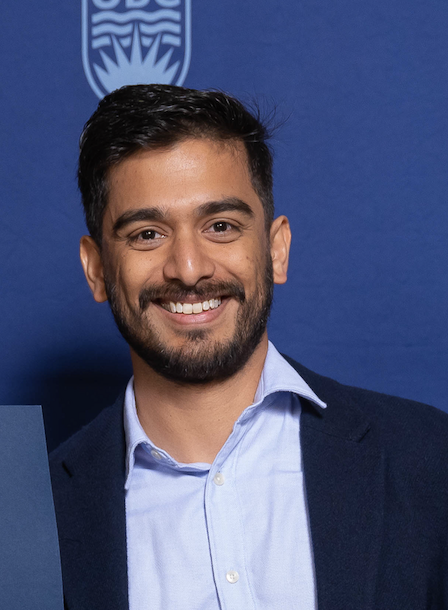

About
Strategic communications shaped by research, storytelling and public engagement.
I help institutions communicate complex ideas with clarity, credibility and impact — connecting research, people and public audiences through thoughtful communications strategy.

Profile
Communications for ideas that matter.
I am a strategic communications and thought leadership professional with experience across higher education, publishing, research communications, public engagement, editorial strategy, stakeholder engagement and event communications.
At the University of British Columbia, my work has focused on translating complex academic research and institutional priorities into clear, engaging public-facing stories. I have written and produced communications across the Faculty of Arts, School of Music and Department of History, supporting stories that span artificial intelligence, Indigenous data stewardship, journalism, music, public history, equity and community engagement.
My flagship communications initiative, Arts Perspectives on AI, brought together interdisciplinary faculty and alumni perspectives on generative AI. The series was featured through UBC channels, added to UBC's central Generative AI website, and included work republished by BC Studies and The Ubyssey.
Communications Approach
Strategy first. Story always.
-
Translate complexity
I turn research, institutional priorities and complex issues into accessible narratives that help audiences understand why the work matters.
-
Build trust
I approach communications as a relationship-building practice grounded in credibility, clarity, audience awareness and respect for stakeholders.
-
Connect strategy and execution
I move between communications planning and hands-on delivery — from messaging and editorial strategy to writing, publishing, promotion and evaluation.
What Colleagues Say
Trusted for judgment, adaptability and relationship-building.
-
“Ritwik has shown a remarkable ability to adapt and take on new work within the scope of the position. His adaptability and initiative are two of his strongest assets.”
-
“His work is accurate and thorough. I learned to trust his judgment on issues that range from promoting the two new minors in the unit to producing the monthly newsletter.”
-
“One of his strengths is his interpersonal and relationship-building skills. He is a well-respected member of the teams he works within.”
Career Journey
Publishing, academia and institutional communications.
-
International publishing and marketing communications
Built a foundation in editorial production, audience development, stakeholder relationships, publication strategy and commercial communications through work with Tudor Rose Publishing. -
Academic research and teaching
Developed expertise in political theory, critical Indigenous theory, democratic theory and decolonization as a PhD Candidate in Interdisciplinary Studies, currently ABD, at UBC. -
Research communications at UBC
Produced communications for the Centre for Migration Studies, including newsletters, annual reports, websites and research storytelling. -
Strategic communications at UBC Faculty of Arts
Led communications for academic units, built the Arts Perspectives on AI series, and supported high-profile events, stakeholder engagement and public-facing storytelling. -
School of Music and Department of History
Expanded communications work into music, community engagement, faculty research, public history and equity-focused institutional storytelling.
Credentials
Academic depth and communications practice.
- Education
- PhD Candidate in Interdisciplinary Studies, currently ABD, University of British Columbia; MA International Relations, Middlesex University; BA (Hons) Political Science, Jadavpur University.
- Selected recognition
- Killam Graduate Teaching Assistant Award, UBC Four Year Fellowship, President's Academic Excellence Initiative PhD Award, Faculty of Graduate Studies Graduate Awards and International Tuition Award.
- Editorial leadership
- Editor-in-Chief of Mantle: The Annual Review of Interdisciplinary Studies, with experience in publication planning, editorial workflow and contributor engagement.
- Professional strengths
- Strategic communications, executive communications, editorial strategy, stakeholder engagement, thought leadership, digital communications, event communications and research storytelling.
Next
Explore the work behind the profile.
The portfolio brings together selected communications projects, published writing and measurable outcomes from my work across UBC and beyond.